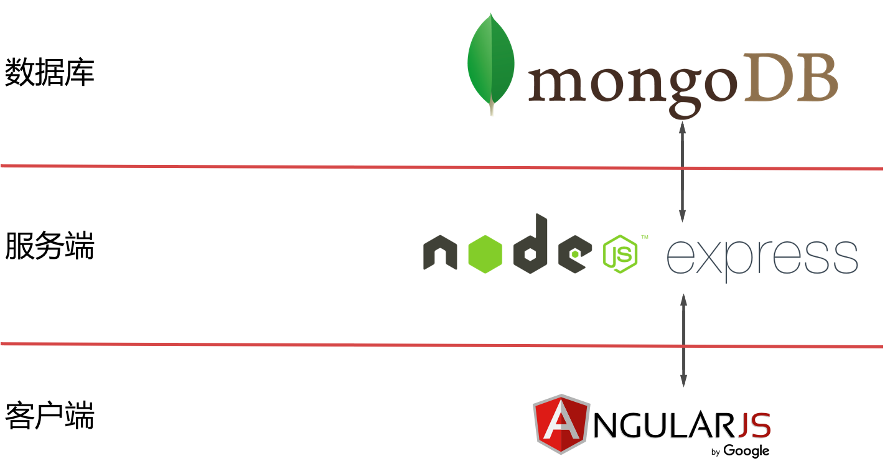
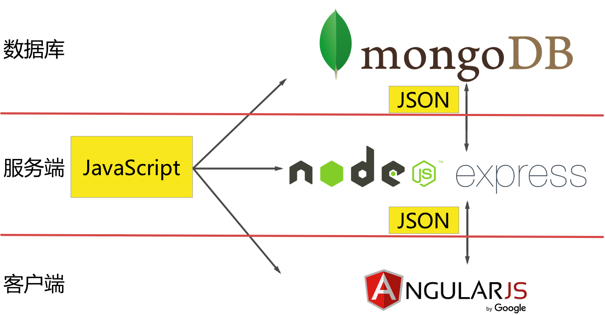

议程:
- 什么是MEAN
- MEAN.JS的主要特色
- 我们在项目中如何实践MEAN.JS
- MEAN.JS相关学习资料
关于我：党建
www.dang-jian.com
- 2000年~2007年：西安电子科技大学，硕士学历，人工智能。
- 2007年~2014年：葡萄城信息技术有限公司，程序员，架构师。
- 2014年~今：西安瑞木信息技术有限公司，架构师，合伙人，负责公司技术培训，团队建设。
- dangjian@github
- dangjian@weibo
- hunterdang@gmail.com
送书

什么是MEAN技术栈
其他已知的技术栈
- LAMP: Linux, Apache, Php, MySQL
- MS.Net: IIS, C#, ASP.Net, SQL Server
- Java: Tomcat, Java, JSP, Oracle
MEAN技术栈
MEAN技术栈
- MongoDB - 数据库
- Express - Web应用框架
- AngularJS - Web前端框架
- Node.js - 服务端运行环境
MEAN技术栈
MEAN技术栈
都是我们熟悉的技术，这很前端~
我们为什么要使用MEAN
- 一种语言编写前后端逻辑，相同的语法和规范
- 项目的扩展性好，便于团队协作
- 项目结构清晰，容易上手
- 社区活跃，可用资源多
虚拟DOM和原生DOM
使用原生DOM生成元素
var a = document.createElement('a')
a.setAttribute('class', 'link')
a.setAttribute('href', 'https://github.com/facebook/react')
a.appendChild(document.createTextNode('React'))
使用虚拟DOM生成元素
var a = React.createElement('a', {
className: 'link',
href: 'https://github.com/facebook/react'
}, 'React')
虚拟DOM在React中的应用
- 不同的数据展现不同的UI,当数据变化时，React会重新构建整个DOM树
- 将当前的DOM树和之前的比较，仅仅把变化的部分反映到实际的浏览器UI更新上
- 可以在服务器端完成HTML结构的构建
单向数据流动：Flux
https://facebook.github.io/flux- 独立于React的架构
- 配合React框架来处理组件和数据之间的交互
- 使用了单向数据绑定的机制，即数据模型到视图的流动
Flux与MVC

Flux与MVC

Flux: Actions、Dispatcher和Stores
- Actions是用于传递数据给Dispatcher的操作集合
- Dispatcher是一个全局的分发器，接受Action，并传递给注册的回调函数
- Stores包含了应用的状态及注册到Dispatcher的回调函数